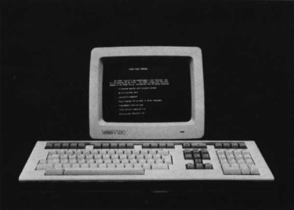
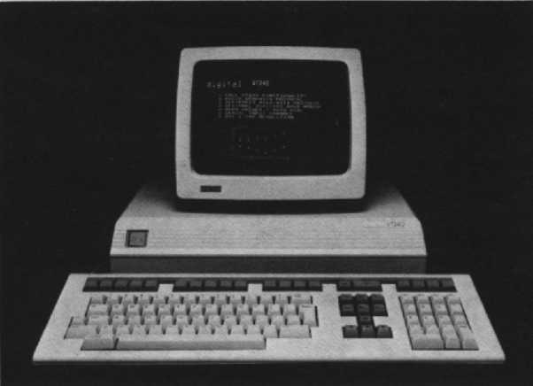

Terminals and Printers Handbook 1983-84
Chapter 3
VT200 Family of Video Terminals
Overview
Digital's newest family of video terminals, the VT220, the VT240, and the VT241,
advance the standard set by Digital's VT100 family of terminals. The VT200 family
includes all the universal features of the VT100 family (see Chapter 5) and expands
these further by letting you control more of the terminal's operations. So that you
can tailor the VT200 family to your application. Digital has developed a series of
user-friendly set-up menus. These menus contain parameters that you can select
and change easily. Just enter Set-Up mode, move the cursor to the field of the characteristic
you want to change, and press the ENTER key. It's that simple.
VT220 and VT240 series terminals can be used with any of Digital's processors.
These video terminals can also work with other vendors' systems. And just like the
VT100 family, the VT200 family is fully compatible with Digital's printers.
The self-contained VT220 terminal is a monochromatic text terminal that lets you
tailor the terminal to your application.
|  |
VT220 Video Terminal
The VT220 video display terminal is the low-end member of Digital's new
VT200 family of video terminals. This monochromatic text terminal not only
includes all the capabilities of Digital's VT100 family, but gives you more control of
the terminal's operations.
Since the VT220 video terminal provides so much functionality, the unit is
totally self-contained. If you connect your VT220 terminal to a printer, such as
Digital's LA50 Personal Printer, you can print the text you've created.
The VT220 terminal consists of a monitor and keyboard. The monitor contains
a monochrome cathode ray tube and a terminal controller circuit board. Also contained
in the monitor are: power supply and monitor board, host serial communications
port, and printer port.
The VT240, a monochromatic text and graphics video terminal, can be upgraded
to include an integral modem.
|  |
VT240 Series Text and Graphics Terminals
The VT240 is a monochromatic text and graphics video display terminal. As the
midrange member of the new VT200 family, it incorporates all the features of the
VT100 family and the VT220 terminal. You can upgrade the VT240 to include the
optional integral modem that supports auto dialing/auto answering functions.
By generating full bit-mapped graphics in Tektronix 4010/4014 emulation, the
VT240 supports the industry's graphics standards. The VT240 also supports ReGIS
(Remote Graphics Instruction Set), Digital's general purpose graphics command
language. It allows you to create pictorial data as easily as you can create ASCII text.
By connecting this terminal to a graphics printer, such as Digital's Letterprinter
100, you can reproduce the screen's content.
The VT240 uses the same keyboard that is used with the VT220 terminal, a
monitor, and a system box. The system box contains the power supply, controller
board, and electrical connectors.
The VT241 terminal, the high-end member of the VT200 family, is a VT240
with a color monitor, instead of the monochrome one. It offers the same capabilities
as the VT240, but with the RGB monitor providing color graphics display. Because
the only difference between the VT240 and the VT241 is the monitor, this handbook
refers to them as the VT240 series.
Major Features
Each member of the VT200 video terminal family includes all the features listed
below:
User-Oriented Features
- Universal VT100 features
- Has the capabilities of the VT100 family and helps
you make a smooth transition from VT100 terminals to VT200 terminals. See Chapter 5.
- Plain language set-up in three languages
- Makes it easy for first-time as well
as experienced users to operate the terminal and control set-up features. Several
menus, which can be displayed in English, French, or German, present a group
of choices. From these choices, select the operating characteristic you want to
suit your particular application.
- 15 user-programmable function keys
- When defined by the host, these keys
store a total of 256 bytes to save frequently used commands and character
sequences. This feature reduces keystrokes and helps you to improve productivity.
- Downline loadable characters
- Lets you design and use special character sets,
such as Katakana or Scientific, in the terminal to support your individual application.
The 94 characters are loaded from the host when needed.
- Advanced video features
- Characters can be assigned bold, blink, reverse
video, and underline highlighting on a character-by-character basis. This aids in
formatting, prompting, and highlighting portions of text.
- 24 lines by 80 or 132 columns
- Allows viewing total format for detailed or
spreadsheet work so you can preview reports prior to printing. You get the same
results on paper as you see on the CRT screen.
- Serial printer port
- Enables you to connect a printing terminal to generate
local hardcopy printout of the VT200 screen. These two devices can share the
same communications line for added savings. The printer port will also support
other auxiliary devices.
- Compose feature
- The COMPOSE CHARACTER key creates characters that
do not exist as standard keys on your keyboard. This feature helps you to access
any character in the multinational character set, even if it is not displayed on
your keyboard. See your Owners Manual for more details.
- Selective erase
- Supports applications where data is entered by filling in the
blanks of a form. This allows the host, with one command, to erase selected
areas on the screen. This leaves the form intact for the next data-entry sequence.
- CRT saver
- Blanks the screen after 30 minutes of inactivity, prolonging the
life of the screen's phosphor. The screen display is restored by pressing any key
or if the terminal receives a character from the host.
Compatibility Features
- EIA and 20 mA interfaces
- Both are standard on the VT200 family. With the
EIA interface, the VT200 family of video terminals meet industry standards and
achieve compatibility with most systems. The 20 mA interface supports long distance
operation of the terminal – up to 500 feet away from the host.
- Selectable local echo
- This feature lets your terminal display on the screen
characters transmitted to the host. This means you can use your terminal on
non-Digital systems where local echo is not supported by the host.
- VT52 and VT100 family compatibility modes
- VT200 terminals are compatible
with present Digital software, as well as application software developed for
the VT52 and VT100 terminals.
Multinational Features
- Multiple language keyboards
- Keyboard versions are available for many different
languages, for example, English, French, German, Spanish, and Italian, as
well as others. The language you want to use is selected in Set-Up.
- Seven-bit and eight-bit character support
- For compatibility with Digital and
non-Digital systems, as well as support of multinational character sets.
Ergonomic Packaging
- Detachable, low profile keyboard
- The keyboard and the monitor can be
positioned separately for your comfort. Since the keyboard has a layout that is
similar to that of an office typewriter, the transition from office typewriter to terminal
is simple. The keyboard exceed European DIN standards for comfort and
ease-of-use.
- Nonglare screen conforming to industry standards
- Enhances the readability
of the screen by reducing glare. The screen is available with green, white, or
amber phosphors to suit your preference.
- Inverted "T" design of cursor keys
- Aids in fast, easy entry of editing commands
and lets you quickly position the cursor anywhere on the screen.
- Tilt mechanism button (VT220 and VT240 only)
- Provides 30 degrees of
adjustable tilt so you can adjust the viewing angle of the monitor to suit your
preference.
- Brightness and contrast controls
- Adjust brightness and contrast of the display
screen for the best viewing level.
Easy Serviceability
- Customer installable
- Saves you time and money.
- Built-in self-test diagnostics
- Reduces the time required to isolate and repair
faults.
Screen Attributes
Digital's VT200 family of terminals allows a standard screen display of 24 lines by
80 or 132 characters. For the VT220, individual characters are based on a seven-by-nine
dot-matrix, while for the VT240 Series it is based on an eight-by-nine dot-matrix.
These provide clear, crisp text displays.
Operating Modes
The VT200 family has the following operating modes, each selectable via Set-Up
from the keyboard or via escape sequences from the host.
- VT200, 7-bit Control Mode executes standard U.S. ANSI functions. This is the
default mode of operation.
- VT200, 8-bit Control Mode executes standard ANSI functions. It is used in 8-bit
communications environments.
- VT100 Mode is an ANSI mode that emulates a VT100 terminal. It is used for
strict compatibility with Digital's VT100 family of terminals. The Digital multinational
character set is not supported in this mode.
- VT52 Mode executes Digital private, not ANSI, functions. Use this mode in conjunction
with applications designed for Digital's VT52 terminal.
- 4010/4014 Mode is a graphics mode used with the VT240 series to display software
applications programs designed for Tektronix 4010/4014 terminals.
- ReGIS Graphics Mode is available only for VT240 series operation. It can be
entered directly from the VT100 or VT200 modes using commands from the keyboard
or host. The VT240 series terminal uses ReGIS graphics mode with software
application programs designed for Digital's VT125 terminals.
These operating modes are described in detail in the VT220 and VT240 Programmer's
Reference Manuals.
Options
| Part Number |
Description |
| VR241-A |
Color monitor. Connects to the VT240 system box in place
of the standard monochrome monitor. Standard with the
VT241. |
| VT24X-AA |
Integral modem/auto dialer. Consists of a circuit board
installed in the VT240 or VT241 system box. This option
allows you to dial up the host through the keyboard and
eliminates the needs for a telephone handset or other dialing
mechanism. |
Accessories and Supplies
The following VT200 family accessories, supplies, components, and spares are
available for the VT220 and VT240 series video terminals. Check with your sales
representative or Digital's Installed Base Group for the latest information.
| Part Number |
Description |
| BCC02-02 (VT240 series only) |
0.67-meter (2-foot) cable for connecting the monochrome
monitor to the system box. |
| BCC02-06 (VT240 series only) |
2-meter (6-foot) cable for connecting the monochrome
monitor to the system box. |
| BCC03-06 (VT240 series only) |
2-meter (6-foot) cable for connecting the color monitor to
the system box. |
| BCC04-10 |
3.1-meter (10-foot) EIA cable for connecting the VT200 terminal
to a modem. |
| BCC05-10 |
3.1-meter (10-foot) EIA cable for connecting the VT200 terminal
to a printer. |
| BC05F-15 |
5.2-meter (15-foot) 20 mA cable for connecting the VT200
terminal to the host. |
| BC22D-25 |
8.3-meter (25-foot) EIA null modem cable for connecting
the VT200 terminal to the host. |
| VT1XX-KF |
Screen cleaning kit |
Maintenance
The VT200 family does not require any preventative maintenance. You can clean the
outside of the cabinet occasionally by using a soft cloth dampened with a mild
detergent, not a solvent. Monitor screens are cleaned with Digital's screen cleaning
kits. Before cleaning the terminal, Digital recommends that you turn off and unplug
the terminal.
Self-Test
The VT220 and VT240 Series terminals automatically perform a self-test each time
they are turned on. To see and hear that the terminal is operating properly:
- Set the monitor's brightness and contrast controls to the midrange position.
- Press the power switch to on. Allow time for the terminal to warm up.
- The terminal will beep and the screen will display the image "VT220 OK" or
"VT240 OK". The latter is also seen for the VT241 terminal.
Operator Troubleshooting Checklist
The following is a list of possible operating problems that may be encountered by
VT200 family terminal users and the most common solutions to these problems.
Terminal does not power up when the power switch is set to 1 (on).
- Power cord not plugged in. – Plug in terminal power cord. Check that wall
outlet provides the correct power level.
- Monitor not powered up. – With VT241 terminal, both the monitor and the
system box must be turned on.
- Voltage selector switch incorrectly set. – Consult the Installation Guide for the
correct setting procedure.
Printer does not print.
- Printer not plugged in. – Make sure that printer is plugged into appropriate
power source and that it is turned on.
- Cable disconnected. – Check that the cable connecting the VT200 to the
printer is firmly in place.
- Incompatible communications features between terminal and printer. – Check
that parity, data bits, and baud rates match.
Terminal display does not resume scrolling.
- If the HOLD light is on, press the HOLD SCREEN key to resume scrolling.
Terminal seems to be locked and does not respond to data sent from the host.
- Clear the terminal using the Clear Comm field in Set-Up.
Nothing is displayed on the screen.
- CRT saver feature may have blanked out the display. – Press any key to
restore the image.
- Terminal may be in LOCAL mode. – Change Set-Up feature to ON-LINE.
- Keyboard not plugged into monitor. – Make certain that the keyboard is
plugged securely to the monitor.
- Cable to the modem or the CPU may not be attached. – Check the cable connection.
- Low setting for brightness and/or contrast control. – Turn brightness and contrast
controls until you see the display.
Additional Documentation
The following documents contain more detailed information about the VT200 family
of terminals.
- Installation of VDTs – An Operator's Guide (EZ-WJ9A1)
- Describes recommended
procedures for installing and using VDT's to achieve a comfortable
workstation environment.
- VT220 Owner's Manual (EK-VT220-UG)
- Provides information needed to operate the VT220.
- VT220 Programmer's Reference Manual (EK-VT220-RM)
- Describes VT220
character processing and provides the character codes, escape sequences, and
control sequences needed to generate terminal control programs.
- VT220 Installation Guide (EK-VT220-IN)
- Describes the procedures used to install the VT220.
- VT220 Programmer's Pocket Guide (EK-VT220-HR)
- Provides a quick-reference summary of programming information.
- VT220 Video Terminal IPB (EK-VT220-IP)
- Provides a detailed parts breakdown
of the VT220. Does not provide part numbers for printed circuit board components.
- VT240 Series Owner's Manual (EK-VT240-UG)
- Provides information needed
to operate the VT240.
- VT240 Series Programmer's Reference Manual (EK-VT240-RM)
- Describes
VT240 character processing and provides the character codes, escape sequences,
and control sequences needed to generate terminal control programs.
- VT240 Series Installation Guide (EK-VT240-IN)
- Describes the procedures
used to install the VT240.
- VT240 Programmer's Pocket Guide (EK-VT240-HR)
- Provides a quick-reference summary of programming information.
- VT240 Pocket Service Guide (EK-VT240-PS)
- Describes procedures used to troubleshoot and repair the VT240 field replaceable units.
- VT240 Video Terminal IPB (EK-VT240-IP)
- Provides a detailed parts breakdown of the VT240. Does not provide part numbers
for printed circuit board components.
Also of interest are:
- PDP-11 and VAX Systems & Options Catalogs
- Provide you with the most accurate and up-to-date information on currently available
PDP-11 and VAX systems, options, and software products. These customer documents are
designed to help you select the right Digital product for your needs. European versions
are also available.
If you require information not contained in these documents, contact your local
Digital representative, dealer, or distributor.
Specifications
Performance Characteristics
Display
| VT220 CRT |
30.5 cm (12 in) diagonal measure; white, green, or amber
phosphor; monochrome composite |
| VT240 CRT |
30.5 cm (12 in) diagonal measure; white, green, or amber
phosphor; monochrome composite |
| VT241 CRT |
33 cm (13 in) diagonal measure, P4 phosphor, RGB color
composite |
| Text format |
24 lines × 80 characters or 132 characters (keyboard- or
host-selectable.) |
| VT240 Series Graphics format |
800 horizontal × 240 vertical addressable points, two bits
per point
800 × 480 logical address range for 2:1 picture aspect
ratio |
| Character |
VT220: 7 × 9 dot-matrix with 2-dot descenders
VT240 Series: 8 × 9 dot-matrix with 2-dot descenders |
| Character size: |
3.35 mm × 2.0 mm (0.132 in × 0.078 in) in 80-column
mode
3.35 mm × 1.3 mm (0.132 in × 0.051 in) in 132-column
mode |
| Character set |
ASCII, U.K. National, Digital Special Graphics, and Digital
Supplemental Character Sets (each 94 printing characters).
The ASCII and Digital supplemental character sets make
up Digital's multinational character set. |
| Cursor type |
Keyboard-selectable, blinking block character or blinking
underline (text)
Blinking diamond, visible when graphics mode is active (graphics)
Crosshair, visible when graphics input mode is active |
Keyboard
| General |
105-key detachable unit with a 1.9 m (6 ft) coiled cord
attached with a 4-pin telephone-type modular connector.
Word processing versions and data processing versions are
available in multiple languages and country kits. |
| Key layout |
51-key arrangement and sculpturing similar to standard
typewriter keyboard with an 18-key auxiliary keypad |
| Numeric Keypad |
18-key numeric keypad with period, comma, minus, enter,
and 4 general purpose function keys |
| Function Keys |
36 keys, firmware and software driven |
Communications
| Type |
Full-duplex, asynchronous (all models) |
| Interface |
EIA RS-232-C and 20 mA, both standard |
| Speeds |
75, 110, 150, 300, 600, 1200, 2400, 4800, 9600, 19,200 b/s,
keyboard selectable |
| Parity |
7- and 8-bit: Even, odd, mark, space or none, keyboard
selectable
8-bit only: Mark and space |
| Character size |
7- or 8-bit, keyboard selectable |
Buffer prevention overflow/
Synchronization: |
Automatic generation of XON and XOFF control codes,
selectable in Set-Up mode |
| Echo |
Local echo selectable in Set-Up mode |
Power Requirements
| Line voltage |
90-128 Vac RMS single phase, 3 wire;
180-268 Vac RMS single phase, 3 wire (switch-selectable) |
| Line frequency |
47-63 Hz |
| Current (VT220) |
0.48 A RMS at 120 Vac RMS
0.24 A RMS at 240 Vac RMS |
| Current (VT240 Series) |
2.2 A RMS at 90 Vac RMS
1.1 A RMS at 180 Vac RMS |
| Power consumption (VT220) |
60 W, maximum |
| Power consumption (VT240 Series) |
107 W, maximum |
Operating Environment
| Temperature |
10° to 40° C (50° to 104° F) |
| Relative humidity |
10% to 90% noncondensing |
| Maximum wet bulb: |
28°C (82°F) |
| Altitude: |
2.4 km (8,000 ft) |
Physical Characteristics
Keyboard |
| Height |
5.0 cm (2.0 in) |
| Width |
53.3 cm (21 in) |
| Depth |
17.1 cm (6.8 in) |
| Weight |
2.0 kg (4.5 lbs) |
VT220 Monitor
| Height |
28.3 cm (11.1 in) |
| Width |
33.3 cm (13.1 in) |
| Depth |
38.7 cm (15.3 in) |
| Weight |
11.8 kg (26 lbs) |
VT240 Monitor
| Height |
29.2 cm (11.5 in) |
| Width |
34.9 cm (13.8 in) |
| Depth |
31.1 cm (12.3 in) |
| Weight |
6.4 kg (14 lbs) |
VT241 Monitor
| Height |
32.4 cm (12.8 in) |
| Width |
38 cm (15 in) |
| Depth |
42.1 cm (17 in) |
| Weight |
16.6 kg (36.6 lbs) |
VT240 Series System Box
| Height |
8.8 cm (3.5 in) |
| Width |
45 cm (18 in) |
| Depth |
30 cm (12 in) |
| Weight |
2.0 kg (4.5 lbs) |
http://vt100.net/docs/tp83/chapter3.html